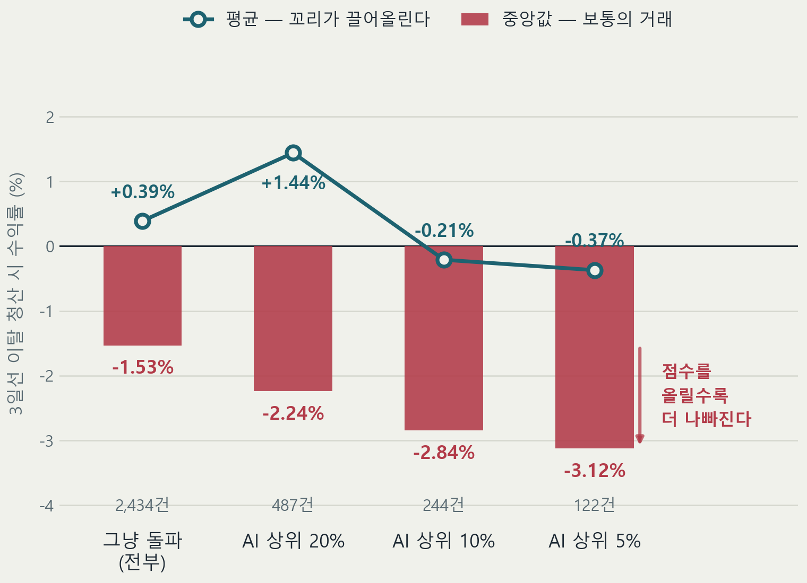

52주 신고가는 문헌이 있는 현상이다. George & Hwang(2004, Journal of Finance)은 52주 신고가에 얼마나 가까운가가 기존 모멘텀 지표보다 미래 수익을 더 잘 설명한다고 보고했다. 이 프로젝트는 그 현상 자체를 다시 검증하는 것이 아니라, 돌파가 일어난 뒤 어느 것을 볼지를 다룬다.
규칙만으로 거르면 하루에도 수십 종목이 남는다. 전부 볼 수는 없고, 어느 것부터 볼지 기준이 없다.
차트 모양·거래량을 사람이 보고 고른다. 재현이 안 되고, 왜 그 종목인지 설명하기 어렵다.
4,042건의 과거 돌파가 이후 어떻게 됐는지를 학습해, 오늘 돌파에 점수를 매긴다.
규칙 기반 스크리너가 걸러낸 종목에 "이 돌파는 얼마나 유망한가"를 숫자로 붙이는 것 — 그리고 그 숫자가 실제로 쓸모 있는지 검증하는 것.
KRX 전 종목 OHLCV·시가총액. 수정주가 기준으로 분할·증자 효과를 제거한다.
52주 고가 돌파 · 신규성 · 추세 · 시가총액 네 조건을 모두 만족하는 종목만 남긴다.
회귀가 예상 수익률을, 분류가 성공 확률을 낸다.
두 예측을 합쳐 하나의 점수로 만들어 웹에서 순위대로 보여준다.
확률에 더 무게를 둔 이유 — 예상 수익률은 오차가 크고 확률이 상대적으로 안정적이기 때문이다. (그 판단이 옳았는지는 §5에서 검증한다.)
장 마감 후 스크리너가 돌아 새 돌파 종목을 찾고, 학습된 모델이 점수를 매겨 JSON으로 저장한다. 웹은 그 결과를 읽어 보여준다.
돌파 후 8거래일까지 목록에 유지하고, 그 뒤에는 내린다 — 신호의 유효기간을 정해둔 것이다.
종가 > [오늘−265일 ~ 오늘−15일] 구간 고가 최댓값 × 1.015
구간을 15일 띄우는 이유 — 며칠 전 만든 고점을 자기가 넘는 건 돌파가 아니다. 1.5% 버퍼는 고가를 살짝 스치는 것을 걸러낸다.
직전 15거래일 안에 같은 수준을 넘은 적이 없을 것
이미 며칠 전에 돌파했다면 오늘은 새로운 신호가 아니다. 같은 돌파를 여러 번 세지 않기 위한 조건.
종가 > 150일선이고, 150일선이 20일 전보다 높을 것
하락 추세에서 잠깐 튀어오른 신고가를 걸러낸다. 추세가 살아 있는 종목만 남긴다.
너무 작은 종목은 호가가 얇아 실제로 사고팔기 어렵다.
우선주도 제외한다 — 보통주와 가격 움직임이 달라 같은 기준으로 볼 수 없다.
네 조건을 모두 통과한 4,042건이 학습 데이터가 됐다. KOSPI 2,025건 · KOSDAQ 2,017건으로 두 시장이 거의 반반이고, 2022.01 ~ 2026.08의 4년 7개월을 덮는다.
돌파폭 · 거래량 배수 · 마감강도(종가가 그날 고가에 얼마나 가까웠나) · 베이스 길이 · 변동성 수축 · 거래량 마름
200일선 기울기 · 52주 저점 대비 위치 · 20일선 이격도 · 신고가 이후 경과일 · 시장 대비 상대강도
시장 수익률 · 유동성(평균 거래대금) · ATR 비율(변동성 크기)
회귀 — 돌파 후 20거래일 안의
최고 수익률이 몇 %일까
분류 — 그 최고 수익률이
15% 이상일 확률
학습 데이터에서 평균 최고 수익률 14.43%,
15% 이상 도달 비율 29.8%.
이 라벨 선택이 나중에 문제가 된다 — §6.
세 가지를 학습 구간 2,836건에서만 쟀다 — 검정 구간까지 보고 변수를 고르면 그 자체가 미래를 훔치는 것이 된다.
| 변수 | 단변량 AUC | VIF | 이득 기여 |
|---|---|---|---|
| 20일선 이격도 | 0.637 | 5.44 | 11.5% |
| ATR 비율 | 0.621 | 1.19 | 9.5% |
| 52주 저점 대비 | 0.621 | 3.69 | 9.1% |
| 상대강도 | 0.610 | 3.54 | 6.5% |
| 돌파폭 | 0.595 | 2.06 | 6.2% |
| 거래량 배수 | 0.567 | 15.98 | 5.9% |
| 거래량 마름 | 0.568 | 17.62 | 6.1% |
| 마감강도 | 0.508 | 1.14 | 7.0% |
| 시장 수익률 | 0.503 | 1.16 | 8.6% |
14개 중 9개만 표시. 단변량 AUC = 그 변수 하나로만 판별했을 때의 성능.
혼자서도 판별력이 있는가. 0.637 ~ 0.503으로 편차가 컸다 — 마감강도와 시장 수익률은 거의 0.5, 즉 단독으로는 동전 던지기다.
서로 겹치지 않는가. 거래량 배수와 거래량 마름의 상관이 0.95, VIF가 16~18로 사실상 같은 변수였다. 이 둘을 합쳐 8개로 줄인 피처셋도 함께 비교했다.
모델이 실제로 쓰는가. 상위 5개가 전체 이득의 46%를 차지했고, 나머지는 고르게 흩어져 있었다.
14개 → 8개로 줄여도 성능이 같았다(AUC 0.613 vs 0.612). 변수를 줄여도 안 떨어진다는 건, 애초에 담긴 정보가 적다는 뜻이다.
모델 6종 × 피처셋 2종 = 12개 조합을 같은 분할·같은 전처리로 돌렸다. 선형(로지스틱)·배깅(랜덤포레스트)· 부스팅(GBM·LightGBM·XGBoost)을 계열별로 세워, 어느 계열이 이 문제에 맞는지부터 봤다.
고르는 기준은 AUC 하나가 아니라 AUC·정밀도·재현율 셋이다 — 스크리너는 순위를 매기는 도구이므로 순위 품질(AUC)과 놓치는 양(재현율)을 같이 봐야 한다.
| 모델 | 피처 | AUC | 정밀도 | 재현율 |
|---|---|---|---|---|
| LogisticRegression (L1) | 8 | 0.6132 | 0.556 | 0.176 |
| LogisticRegression | 8 | 0.6131 | 0.555 | 0.177 |
| RandomForest | 14 | 0.6119 | 0.501 | 0.238 |
| GradientBoosting | 14 | 0.6091 | 0.498 | 0.325 |
| LightGBM | 14 | 0.6070 | 0.500 | 0.329 |
| XGBoost | 14 | 0.6009 | 0.491 | 0.331 |
12개 조합의 AUC가 0.58 ~ 0.61에 모여 있다. 가장 단순한 로지스틱 회귀가 1위이고, 부스팅 계열이 오히려 뒤진다.
LightGBM을 채택했다. AUC는 0.607로 1위가 아니지만 재현율이 0.329로 가장 높아 놓치는 기회가 적고, 결측을 그대로 학습할 수 있어 운영이 단순하다.
배운 것 — 모델 선택보다 문제 설정이 훨씬 중요하다. 6종을 다 돌려도 AUC는 0.03 차이였다.
| 회귀 | 분류 | |
|---|---|---|
| 트리 개수 | 200 | 200 |
| 최대 깊이 | 3 | 5 |
| 학습률 | 0.01 | 0.05 |
| 표본 추출 | 0.8 | 0.8 |
| L1 / L2 정규화 | 1.0 / 5.0 | — |
회귀는 깊이 3에 학습률 0.01로 매우 보수적이다 — 탐색 결과 얕고 느리게 학습할수록 좋았다.
표본이 4,042건뿐이고 신호가 약하다. 깊은 트리를 쓰면 잡음을 외운다.
회귀의 R²가 0.029에 그친 것이 그 증거다 — 수익률의 3%밖에 설명하지 못한다. 모델을 복잡하게 만들어도 이 벽은 넘지 못했다.
상관관계와 다중공선성(VIF)을 따져 14개 → 8개로 줄인 피처셋도 함께 비교했다. 결과는 거의 동일했다 (AUC 0.613 vs 0.612). 변수를 줄여도 성능이 안 떨어진다는 것은, 애초에 그 변수들이 담은 정보가 적다는 뜻이다.
StandardScaler로 평균 0, 표준편차 1로 변환한다. 거래대금은 억 단위, 마감강도는 0~1이라 그대로 넣으면 큰 숫자가 학습을 지배한다.
회귀 → 20일 내 최고 수익률이 몇 %일지
분류 → 그것이 15%를 넘을 확률
같은 입력, 다른 질문이다.
확률은 이미 0~100이고, 예상수익은 %라 범위가 다르다. 예상수익을 0~100으로 눌러 맞춘 뒤 가중합한다.
예상수익에 3을 곱하는 이유 — 회귀 출력이 대체로 0~30% 구간에 몰려 있어, 3배로 늘려야 확률과 같은 0~100 눈금이 된다. 33% 이상이면 만점으로 잘린다.
두 모델의 신뢰도가 다르기 때문이다. 분류는 AUC 0.640으로 무작위보다 확실히 낫지만, 회귀는 R² 0.029 — 수익률의 3%밖에 설명하지 못한다. 덜 믿을 만한 쪽에 낮은 가중치를 준 것이다.
방향은 옳았다. 다만 두 모델이 같은 라벨을 공유한다는 더 근본적인 문제가 남는다 — 둘 다 "20일 내 최고 수익"을 보고 배웠다. 가중치를 어떻게 섞어도 그 한계는 그대로다. §6에서 다룬다.
기저 확률이 29.8%(전체 중 15% 이상 도달 비율)인데 모델이 고른 것은 49.4%가 성공했다. 약 1.7배다.
다만 재현율이 16.4% — 실제로 오를 종목의 84%를 놓친다. 모델이 매우 보수적으로 고른다는 뜻이다.
용도에 따라 다르다. 이 시스템은 "오늘 볼 만한 종목 몇 개를 추리는" 스크리너다.
모든 기회를 잡는 것보다 고른 것이 맞을 확률이 중요하므로, 재현율을 희생하고 정밀도를 택한 것은 용도에 맞는 선택이다.
학습 2,836건(2022.01~2025.03) → 검정 1,206건 (2025.03~2026.08). 시간순으로 잘라 검정 구간은 학습에 한 번도 쓰지 않았다. — 무작위 분할은 미래를 학습에 섞어 성능을 부풀린다.
| 선별 방식 | 픽 | 15% 도달률 | 20일 내 최고수익 |
|---|---|---|---|
| 그냥 52주 돌파 (전부) | 1,206 | 29.6% | 13.52% |
| AI 종합점수 상위 20% | 241 | 41.1% | 18.81% |
| ATR 비율 상위 20% (단일) | 241 | 44.4% | 18.73% |
| 52주 저점대비 상위 20% (단일) | 241 | 42.3% | 17.36% |
| 20일선 이격도 상위 20% (단일) | 241 | 39.8% | 17.81% |
| 거래량 배수 상위 20% (단일) | 241 | 33.6% | 14.27% |
| 마감강도 상위 20% (단일) | 241 | 31.5% | 13.07% |
15% 도달률이 29.6% → 41.1%로 오른다. 1.39배이고, 상위 20%→10%→5%로 좁힐수록 계속 오른다 — 점수가 실제로 순서를 담고 있다는 뜻이다.
ATR 비율 하나로만 고르면 44.4% — 14개를 합친 AI(41.1%)보다 높다. 검정 AUC도 20일선 이격도 단독 0.633이 모델 0.617을 앞선다.
모델이 배운 건 사실상 "변동성이 큰 것을 고른다" 한 줄이었다. — 다음 장에서 그 대가가 드러난다.
같은 검정 구간에서 20일 뒤 실제 수익률을 나란히 놓으면 그림이 뒤집힌다.
| 선별 방식 | 20일 내 최고 | 20일 후 실제 | 승률 |
|---|---|---|---|
| ① 그냥 돌파 (전부) | 13.52% | +2.65% | 49.2% |
| ② AI 상위 20% | 18.78% | +2.22% | 45.0% |
| ③ AI 상위 10% | 20.59% | +1.25% | 38.8% |
| ④ AI 상위 5% | 19.12% | +1.35% | 42.6% |
최고 수익은 올라가는데 실제 수익은 따라오지 않는다. 통계적으로는 차이가 없다(p = 0.69~0.84) — 즉 실제로 손에 쥐는 수익에서는 AI 신호의 우위가 확인되지 않는다.
학습 타깃이 "20일 안의 최고 수익률"이었다. 그런데 그 최고점이 언제인지는 사후에만 알 수 있다. 실제로는 그 시점에 팔 수 없다.
모델은 "크게 출렁일 종목"을 정확히 골라냈다. 다만 그 출렁임을 잡는 방법은 배우지 않았다.
모델이 크게 출렁일 종목을 고른다면, 돌파 전략에 맞는 추세추종 청산으로 상방만 취할 수 있어야 한다. 청산 규칙 4종을 워크포워드 2,434건에서 다시 쟀다 — 6개월씩 창을 굴려 앞 구간으로만 학습.

3일선 · 5일선 · 52주 고가 되돌림 · 추격손절 — 네 규칙 어디에서도 AI 우위가 유의하지 않았다 (p = 0.16~0.69). 추격손절 상위 10%는 오히려 유의하게 나빴다(p = 0.023).
AI 점수를 올릴수록 중앙값은 −1.53% → −3.12%로 계속 나빠진다. 평균만 이따금 꼬리가 끌어올릴 뿐이고, 그 평균조차 상위 10%부터는 마이너스로 내려간다.
청산 규칙은 이미 있는 방향을 다르게 자를 뿐, 없는 방향을 만들지 못한다. 모델이 고른 것은 위로 큰 종목이 아니라 양쪽으로 큰 종목이었다.
고칠 곳은 청산이 아니라 라벨이다.
AI는 그냥 돌파를 확실히 이겼다(29.6% → 41.1%). 그런데 ATR 비율 한 개가 44.4%로 그 위였다. 14개를 합쳐 얻은 것이 잘 고른 변수 하나만 못했다.
6종 × 2피처셋 = 12개 조합의 AUC가 0.58~0.61에 모여 있었다. 가장 단순한 로지스틱 회귀가 1위였다.
타깃을 "20일 내 최고 수익"으로 잡은 순간, 모델은 잡을 수 없는 것을 정확히 맞히도록 학습됐다.